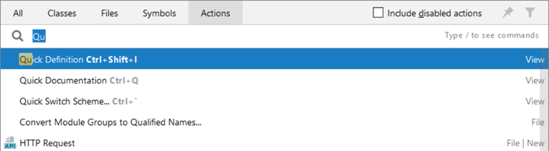
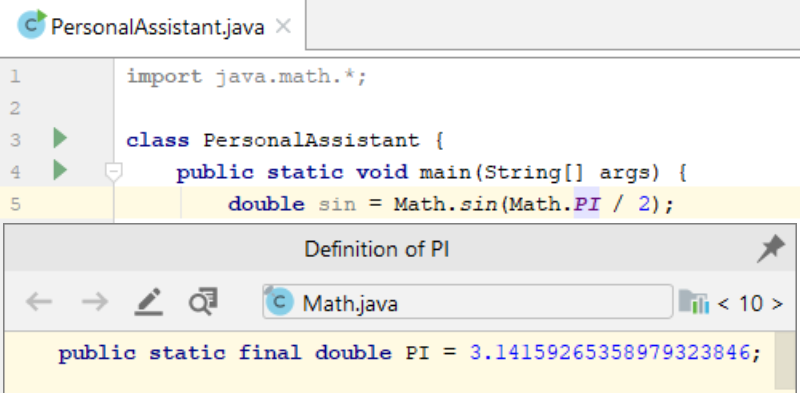
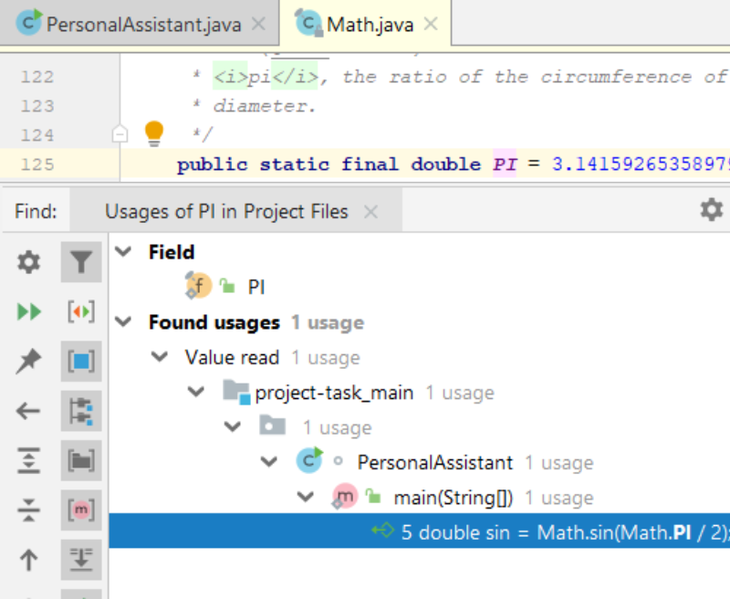
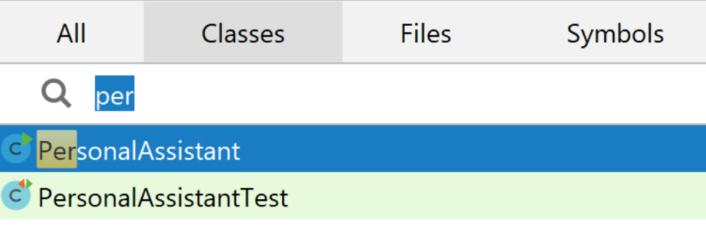
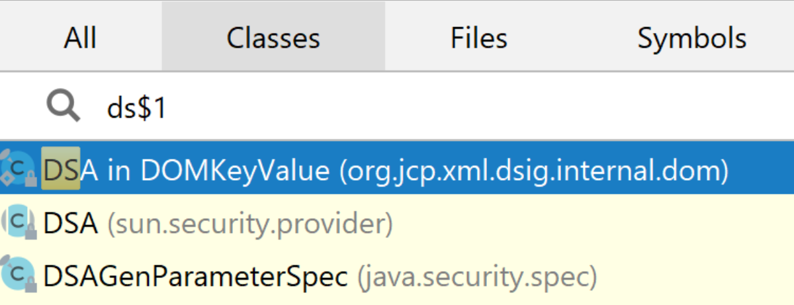
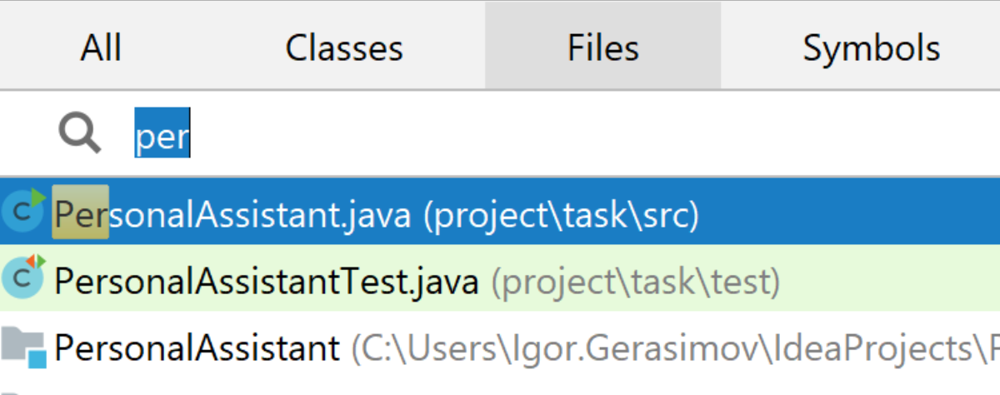
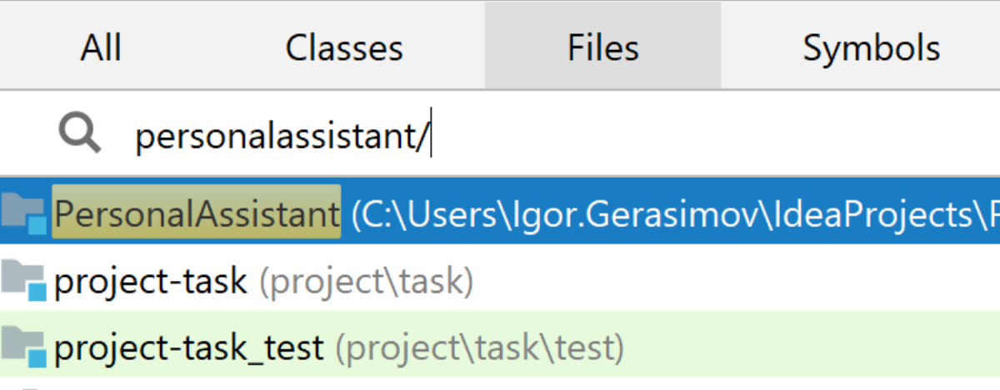
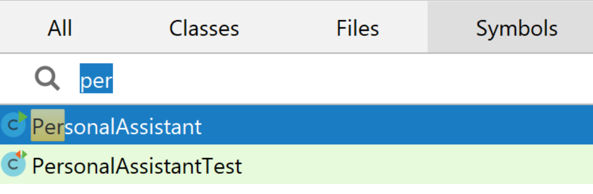

Навігація по коду
Теорія
Досить важко запам’ятати всі ярлики та всі дії та засоби підвищення продуктивності, які є в IntelliJ IDEA. Однак не турбуйтеся про це. Все, що вам потрібно пам’ятати, це одна дія, яка керує ними всіма, Help | Find Action (Допомога | Пошук дії) (⌘ ⇧ A / Ctrl + Shift + A). Просто почніть вводити потрібну дію, і ви отримаєте список:
§1. Пошук коду
IntelliJ IDEA дозволяє знаходити та замінювати текстові рядки в активному редакторі.
Пошук у поточному файлі
- У головному меню виберіть Edit | Find | Find (Редагувати | Знайти | Знайдіть) або натисніть ⌘ F / Ctrl + F. Панель пошуку з’являється у верхній частині активного редактора.
- За потреби вкажіть параметри пошуку.
- У полі пошуку почніть вводити пошуковий рядок:
Під час введення тексту вибирається перше входження рядка пошуку після поточної позиції курсору; інші випадки підсвічуються в редакторі. Крім того, відповідні випадки позначаються смужками в правому каналі.
- Щоб знайти багаторядковий фрагмент, натисніть у полі пошуку.
- Перегляньте результати пошуку.
Замінити в поточному файлі
- У головному меню виберіть Edit | Find | Replace (Редагувати | Знайти | Замінити) або натисніть ⌘ R / Ctrl + R. Панель пошуку та заміни з’являється вгорі активного редактора.
- За потреби вкажіть параметри пошуку та заміни.
- У полі пошуку почніть вводити пошуковий рядок. Коли ви вводите текст, відповідні входження підсвічуються в редакторі, а під час першого входження відкривається спливаюче діалогове вікно Replace (Замінити), у якому пропонується замінити поточне входження або всі порожнім рядком.
- Почніть вводити рядок для заміни.
- Перегляньте результати пошуку та за допомогою кнопок діалогового вікна заміни замініть входження за потреби.
Перегляньте на сайті jetbrains.com Керування пошуком для детального опису параметрів пошуку та заміни.
§2. Перехід до класу, файлу або символу за назвою
Команди Навігації дозволяють швидко переходити до потрібних класів, файлів або символів, указаних іменами. IntelliJ IDEA пропонує пошуковий список відповідних імен, з якого ви можете вибрати потрібне та відкрити його в редакторі. Ця навігація враховує використання великих літер CamelCase і snake_case. Перегляньте підказки, щоб отримати детальний список доступних методів.
Декларація та список використання
Програмування — це набагато більше розуміння та читання існуючого коду, ніж написання нового коду. Під час навчання також дуже важливо бачити свій код у цілому та розуміти, як він працює.
Коли ви використовуєте будь-яку змінну, функцію чи метод і вам потрібна підказка щодо того, як це працює, дозвольте коду говорити сам за себе. Подивіться на визначення за допомогою ⌘ Y / Ctrl + Shift + I:
Є ще один варіант: натисніть ⌘ B / Ctrl + B, щоб перейти до оголошення сутності; використайте це ще раз у декларації, щоб переглянути список використання:
§3. Навігація за назвою
У головному меню наведіть вказівник на Navigate (Навігація), а потім виберіть відповідно Class (Клас), File (Файл) або Symbol (Символ) або скористайтеся наведеними нижче комбінаціями клавіш:
- Клас: ⌘ O / Ctrl + N
- Файл (директорія): ⌘ ⇧ O / Ctrl + Shift + N
- Символ: ⌘ ⌥ O / Ctrl + Shift + Alt + N
- У спливаючому вікні почніть вводити потрібне ім’я. Отже, ви можете вводити символи, розташовані будь-де всередині потрібного імені. Під час введення список пропозицій зменшується, відображаючи лише відповідні імена.
- Клас:
Ви також можете перейти безпосередньо до вказаного анонімного класу. Достатньо вказати назву класу та анонімний номер класу, розділений символом $:
- Файл:
- Каталог: використовуйте той самий ярлик, що й для навігації файлами, і введіть назву каталогу, який ви шукаєте, ім’я шаблону закінчується на / або \:
- Символ:
- Натисніть потрібний запис у списку пропозицій або виберіть його за допомогою клавіш зі стрілками та натисніть Enter.
§4. Висновок
Ви можете легко знаходити та замінювати текстові рядки, а також переміщатися по коду за допомогою цих простих команд і гарячих клавіш. Не забувайте про цю функцію, використовуючи IntelliJ IDEA, щоб підвищити ефективність і заощадити час.
Ви також можете переглянути Урок на hyperskill.org.
Практичні завдання та відповіді
Подаються завдання та варіанти відповідей. Правильний варіант виділено синім кольором.
№1. Мета
Питання: Що можна знайти за допомогою команд навігації?
Виберіть один варіант зі списку:
- Будь-яка кнопка на панелі керування IDEA
- Будь-який рядок коду в будь-якому файлі
- Класи, файли або символи, визначені іменами ✔
- Публічні заняття
Пояснення. Правильна відповідь: класи, файли або символи, визначені іменами.
Команди навігації в IntelliJ IDEA дозволяють швидко знаходити класи, файли або символи, указані за іменами. Ви можете використовувати ці команди для переходу до оголошення символу, використання символу або визначення класу.
Ви також можете використовувати команди навігації, щоб знайти будь-який рядок коду в будь-якому файлі. Однак це не так ефективно, як використання функції пошуку. Панель керування IDEA не має кнопок, до яких можна переходити за допомогою команд навігації. Публічні класи є підмножиною класів. Ви можете використовувати команди навігації, щоб знайти публічні класи, але ви також можете знайти інші типи класів.
Ось деякі з найбільш часто використовуваних команд навігації в IntelliJ IDEA:
- Перейти до оголошення (Ctrl+B або ⌘B): ця команда переходить до оголошення символ під вставкою.
- Перейти до використання (Alt+F7 або ⌥F7): ця команда переходить до всіх місць де використовується символ під кареткою.
- Перейти до визначення (Ctrl+Alt+B або ⇧⌘B): ця команда переходить до визначення класу або методу під кареткою.
- Знайти в шляху (Ctrl+Shift+F або ⇧⌘F): ця команда дозволяє щоб шукати символ у поточному проекті або в певному шляху.
- Останні файли (Ctrl+E або ⌘E): ця команда відкриває список найбільш нещодавно відкриті файли.
№2. Шукаю дії
Питання: яку дію можна знайти за допомогою команди «Знайти дію»?
Виберіть один варіант зі списку:
- Усі дії в IntelliJ IDEA ✔
- Усі дії на вашому комп’ютері
- Лише ті дії, які ви визначаєте вручну
- Лише запрограмовані вами дії
Пояснення. Правильна відповідь: усі дії в IntelliJ IDEA.
Команда «Знайти дію» в IntelliJ IDEA дозволяє шукати будь-яку дію, незалежно від того, чи є вона вбудованою дією чи спеціальною. Це включає дії, доступні в меню, дії, доступні на панелях інструментів, і дії, доступні за допомогою комбінацій клавіш.
Ви також можете скористатися командою «Знайти дію», щоб знайти дії, які зараз невидимі. Наприклад, якщо у вас є спеціальна дія, яка прихована, ви можете скористатися командою «Знайти дію», щоб знайти її та зробити видимою. Команда «Знайти дію» — це потужний інструмент, який може допомогти вам дізнатися про всі дії, доступні в IntelliJ IDEA. Це також може допомогти вам знайти дію, необхідну для виконання певного завдання.
Ось кроки щодо того, як знайти дію за допомогою команди "Знайти дію":
- Натисніть Ctrl+Shift+A (або ⇧⌘A на macOS).
- У полі пошуку введіть назву дії, яку ви шукаєте.
- IntelliJ IDEA відобразить список дій, які відповідають вашим критеріям пошуку.
- Виберіть дію, яку хочете використати.
№3. Знайти та замінити
Питання: Що можна знайти та замінити в активному редакторі?
Виберіть один варіант зі списку:
- Прокоментовані рядки
- Текстові рядки ✔
- Будь-що, але ви не можете замінити це в активному редакторі
- Зарезервовані мовні літерали
Пояснення. Правильна відповідь: текстові рядки.
Ви можете знайти та замінити текстові рядки в активному редакторі IntelliJ IDEA. Ви також можете знайти та замінити рядки з коментарями, але ви не можете замінити зарезервовані мовні літерали.
Щоб знайти та замінити текстові рядки, виконайте такі дії:
- Натисніть піктограму «Знайти» на панелі інструментів.
- У діалоговому вікні пошуку введіть текстовий рядок, який потрібно знайти.
- Натисніть вкладку «Замінити».
- Введіть текстовий рядок, яким потрібно замінити знайдений текстовий рядок.
- Натисніть кнопку «Замінити».
- IntelliJ IDEA знайде всі випадки текстового рядка, який ви шукаєте, і замінить їх новим текстовим рядком.
Ви також можете використовувати регулярні вирази для пошуку та заміни текстових рядків. Регулярні вирази – це потужний інструмент, який можна використовувати для пошуку та заміни текстових рядків, які відповідають певному шаблону.
Щоб дізнатися більше про регулярні вирази, ви можете звернутися до документації IntelliJ IDEA:
Регулярні вирази: https://www.jetbrains. com/help/idea/regular-expressions.html
№4. Запустіть навігацію
Питання: Відкрийте "Навігація - Клас" і введіть "itera". Який перший результат (зверху) з’являється у вікні?
Виберіть один варіант зі списку:
- Iterable ✔
- IterableNodeType
- Ітерація
- Ітератор
Пояснення. Відповідь: Ітерація.
Iterable — це інтерфейс, який визначає набір методів, які повинні бути реалізовані будь-яким контейнером, який можна повторювати. IterableNodeType — це абстрактний клас, який використовується для представлення типу елемента в ітераційному контейнері. Ітерація – це загальний термін для процесу обходу елементів контейнера.
№5. Пошук IntelliJ IDEA
Питання: Давайте підсумуємо команди, за допомогою яких ми можемо переміщатися по коду в IntelliJ IDEA. Установіть відповідність між назвами команд і пошуком, який вони виконують.
Установіть відповідність між елементами лівого та правого стовпців:
- Редагувати | Знайти | Замінити - замінює щось у поточному файлі
- Редагувати | Знайти | Знайти – пошук у поточному файлі
- Довідка | Знайти дію – шукає дії
- Команди навігації - пошук класів, файлів і символів
Пояснення. Редагувати | Знайти | Команда Replace дозволяє знайти та замінити певний текстовий шаблон у поточному файлі. Довідка | Команда «Знайти дію» дозволяє шукати дії в IntelliJ IDEA, такі як рефакторинг, перевірки та шаблони коду. Команди навігації – це набір комбінацій клавіш, за допомогою яких можна швидко переходити до різних частин коду, наприклад до оголошення символу, використання символу чи визначення класу.
Ось деякі інші команди навігації в IntelliJ IDEA:
- Ctrl+B (або ⌘B у macOS): перейдіть до оголошення символу під курсор.
- Ctrl+Alt+Left (або ⌘[ на macOS): перейти до попереднього розташування в редактор.
- Ctrl+Alt+Right (або ⌘] у macOS): перейдіть до наступного розташування в редактор.
- Ctrl+E (або ⌘E в macOS): відкрити список останніх файлів.
- Ctrl+Shift+E (або ⌘⇧E у macOS): відкрити список останніх розташувань .
№6. Команди навігації
Питання: за допомогою навігаційних команд можна швидко перейти до.
Виберіть один варіант зі списку:
- будь-який файл проекту, визначений назвою або номерами
- потрібні класи, файли або папки, визначені ідентифікаторами
- будь-яка проектна документація, зазначена за назвою
- потрібні класи, файли чи символи, визначені іменами ✔
Пояснення. Відповіддю є потрібні класи, файли або символи, визначені іменами.
Команди навігації в IntelliJ IDEA дозволяють швидко переходити до потрібних класів, файлів або символів, указаних іменами. Наприклад, ви можете скористатися комбінацією клавіш Ctrl+B (або ⌘B у macOS), щоб перейти до оголошення символу під курсором. Ви також можете використовувати Navigate | Меню символів для пошуку символу за назвою.
Ви не можете використовувати команди навігації для переходу до файлів проекту, указаних іменем чи номерами, або документації проекту, указаної ім’ям.
№7. Замініть ціль
Питання: подивіться на Керуйте сторінкою пошуку та дізнайтеся, який ярлик потрібно використовувати, щоб швидко замінити ціль вашого пошуку у файлі?
Виберіть один варіант зі списку:
- Ctrl+Alt+Shift+J ✔
- Ctrl+Alt+Shift
- Ctrl+Alt
- Ctrl+Alt+Shift+G
Пояснення. Відповідь: Ctrl+Alt+Shift+J.
Відповідно до документації IntelliJ IDEA, комбінація клавіш для швидкої заміни цілі вашого пошуку у файлі — Ctrl+Alt+Shift+J. Цей ярлик відкриє діалогове вікно «Замінити у файлі», у якому можна вказати рядок пошуку та рядок заміни. Потім ви можете натиснути кнопку «Замінити все», щоб замінити всі входження рядка пошуку у файлі.
Інші параметри не є ярликами для заміни тексту в IntelliJ IDEA.
Що таке навігація кодом?
Навігація кодом – це процес переміщення по кодовій базі, щоб знайти потрібну інформацію. Це можна зробити за допомогою різних методів, наприклад:
- Використання навігаційних функцій IDE: більшість IDE (інтегрованих середовищ розробки) мають різноманітні функції, які можуть допомогти вам у навігації кодом, наприклад:
- Перейти до визначення: ви перейдете до оголошення символу під курсором.
- Знайти всі посилання: це покаже вам усі місця, де використовується символ під курсором.
- Навігація вперед і назад: це дозволить вам рухатися вперед і назад між раніше відвіданими місцями.
- Показати використання: ви побачите всі місця, де використовується символ.
- Використання текстового пошуку: Ви також можете використовувати текстовий пошук, щоб знайти певні рядки коду або шаблони тексту.
- Використання налагоджувача: за допомогою налагоджувача можна покроково переглядати код рядок за рядком, що може бути корисним для розуміння того, як працює певний фрагмент коду.
Вибір найкращої техніки навігації залежатиме від конкретного завдання, яке ви намагаєтеся виконати. Наприклад, якщо ви намагаєтеся знайти визначення символу, вам слід скористатися функцією «Перейти до визначення». Якщо ви намагаєтеся знайти всі місця, де використовується символ, скористайтеся функцією «Знайти всі посилання».
Навігація кодом є важливою навичкою для будь-якого програміста. Освоївши техніку навігації, ви можете заощадити час і розчарування під час роботи з кодом.
Ось кілька додаткових порад щодо навігації кодом:
- Використовуйте описові назви змінних і функцій. Це полегшить пошук коду, який ви шукаєте.
- Використовуйте коментарі, щоб документувати свій код. Це також полегшить розуміння того, що робить код.
- Використовуйте послідовний стиль кодування. Це полегшить швидке сканування коду.
- Використовуйте хорошу IDE. Хороша IDE матиме різноманітні функції, які допоможуть вам орієнтуватися в коді.